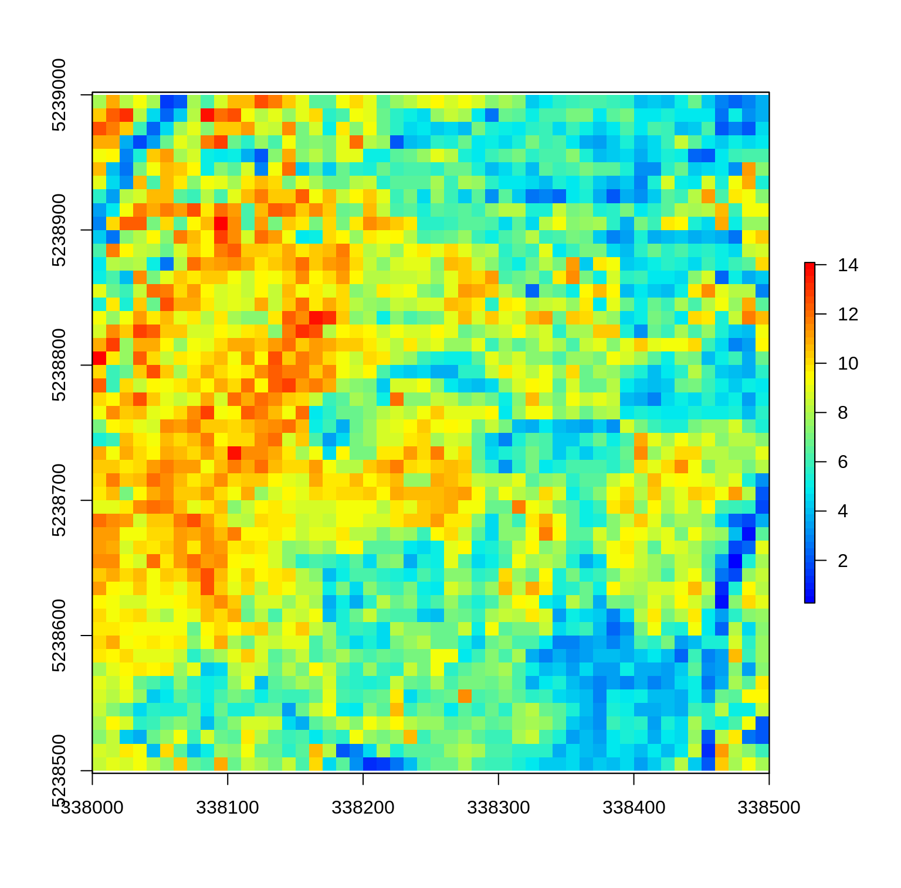
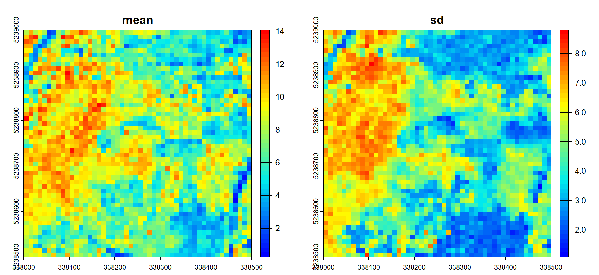
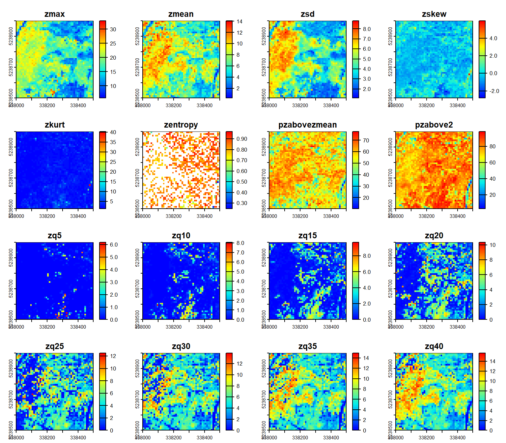
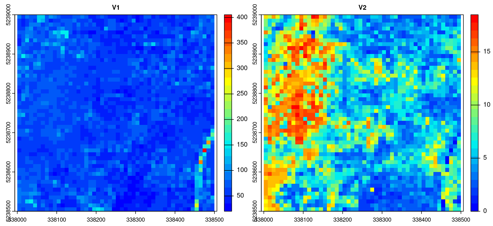
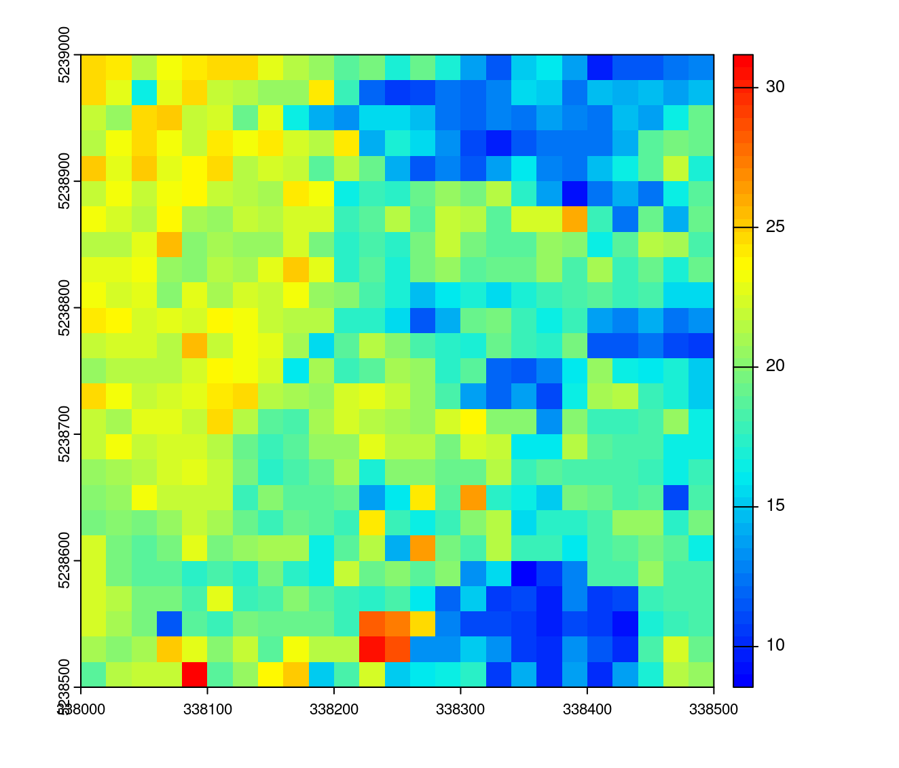
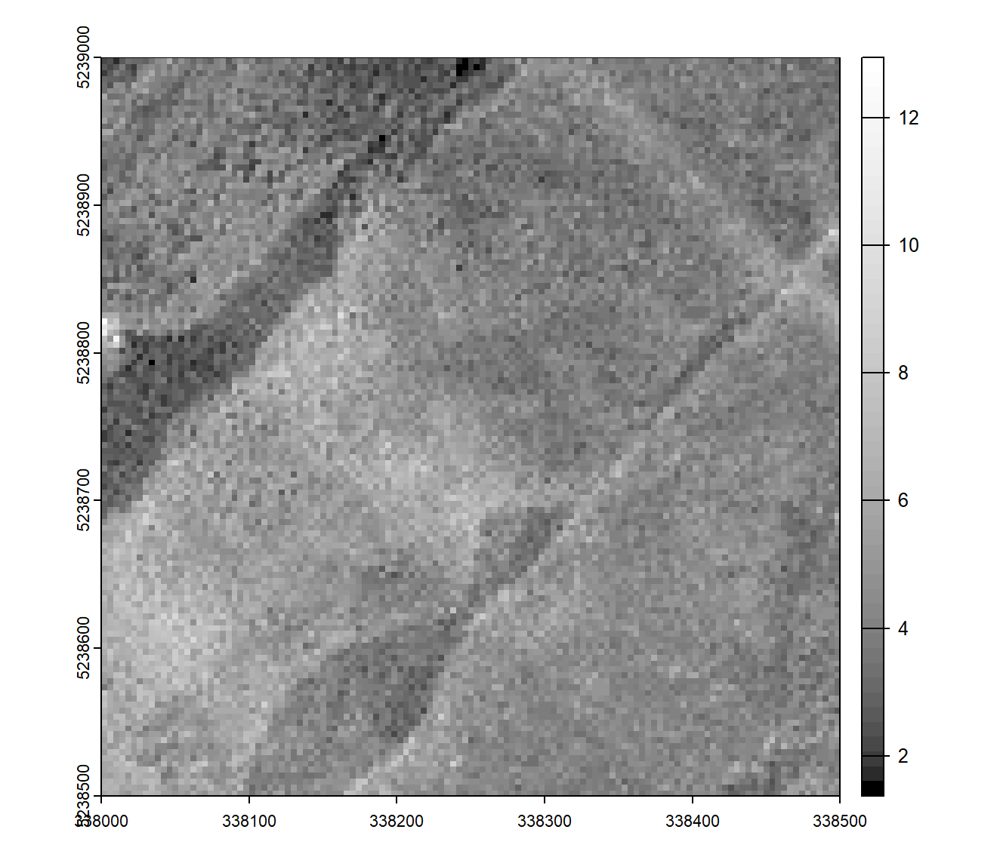
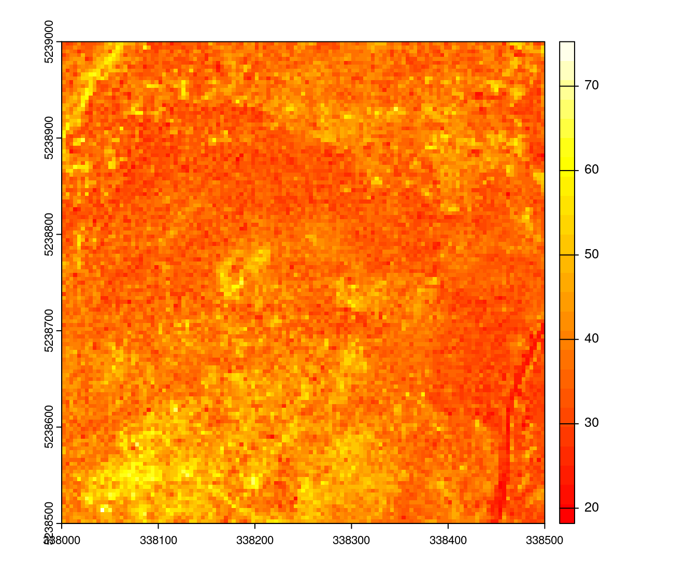
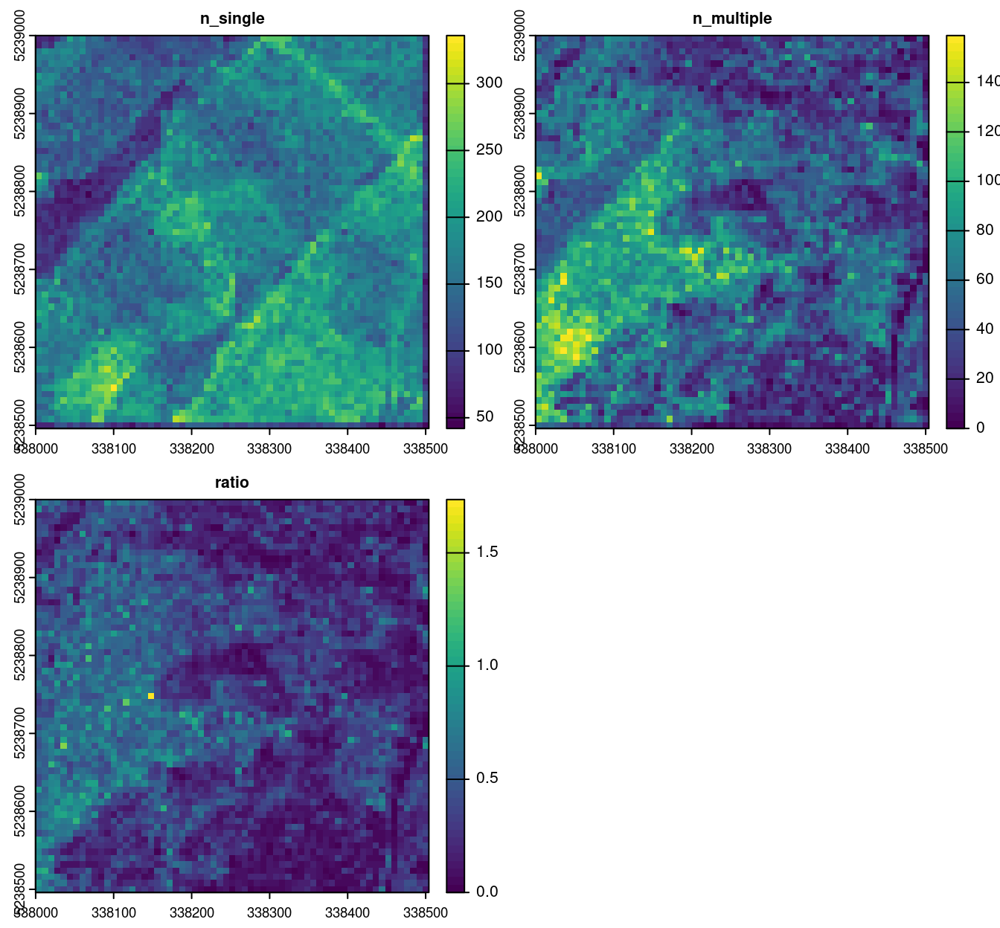

10 Derived metrics at the grid level
10.1 Overview
The “grid” level of regularization corresponds to the computation of derived metrics for regularly spaced locations in 2D. Derived metrics calculated at grid level are the basis of the area-based approach (ABA) that we discuss with in more detail in section 16. In brief, the ABA allows the creation of wall-to-wall predictions of forest inventory attributes (e.g. basal area or total volume per hectare) by linking ALS variables with field measured references. ABA is one application of derived metrics at the grid level but not the only one.
As seen in sections 8 and 9 calculating derived metrics is straightforward. The user only needs to provide a formula to calculate the metric of interest. For example, to calculate the average height (mean(Z)) of all points within 10 x 10 m pixels we can run the following:
hmean <- grid_metrics(las, ~mean(Z), 10) # calculate mean at 10 m
plot(hmean, col = height.colors(50))
The returned hmean object is a RasterLayer:
hmean
#> class : RasterLayer
#> dimensions : 50, 50, 2500 (nrow, ncol, ncell)
#> resolution : 10, 10 (x, y)
#> extent : 338000, 338500, 5238500, 5239000 (xmin, xmax, ymin, ymax)
#> crs : +proj=utm +zone=19 +datum=WGS84 +units=m +no_defs
#> source : memory
#> names : V1
#> values : 0.2670795, 14.08985 (min, max)To calculate metrics for hexagonal cells instead, we can use the hexbin_metrics() function instead. In this case the resolution is defined as the square root of the hexagon area to be consitant with grid_metrics().
metrics_hex <- hexbin_metrics(las, ~mean(Z), 10)
col <- grDevices::colorRampPalette(height.colors(25))
plot(metrics_hex, colramp = col)
As described in sections 8 and 9, to calculate more than one metric at a time a custom function needs to be created first. The function can contain any number of metrics but needs to return a labeled list. For example, to calculate the mean and standard deviation of point heights, the following function can be created. In this case the return object is a RasterBrick with two layers.
f <- function(x) { # user-defined fucntion
list(mean = mean(x), sd = sd(x))
}
metrics <- grid_metrics(las, ~f(Z), 10) # calculate grid metrics
plot(metrics, col = height.colors(50)) # some plotting
The functions that specify which metrics to calculate can of course contain any number of metrics. The most commonly used metrics are already predefined in lidR - the stdmetrics() function contains metrics that summarize the vertical distribution of points, their intensities, and return structure. The complete list of all metrics can be found in the lidR wiki page. To use the predefined list of 56 metrics we can run the grid_metrics() function as follows:
metrics <- grid_metrics(las, .stdmetrics, 10) # calculate standard metrics
plot(metrics, col = height.colors(50)) # some plotting
Because of the flexibility in defining metrics, it is very easy to extend basic functionality to create new, non-standard metrics. For example, below we demonstrate how the coefficient of variation and inter-quartile range can be calculated:
metrics_custom <- function(z) { # user defined function
list(
coef_var <- sd(z) / mean(z) * 100, # coefficient of variation
iqr <- IQR(z)) # inter-quartile range
}
metrics <- grid_metrics(las, ~metrics_custom(z=Z), 10) # calculate grid metrics
plot(metrics, col = height.colors(50)) # some plotting
10.2 Applications
10.2.1 Modeling
All *_metrics functions can map any kind of formula as long as it returns a number or a list of numbers, meaning that that it’s possible to input an expression derived from a predictive model to map the resource. In the section 9 we made a model that can be written \(0.7018 \times pzabove2 + 0.9268 \times zmax\). We can map this predictive model with a resolution of 10 meters:
prediction <- grid_metrics(las, ~0.7018 * sum(Z > 2)/length(Z) + 0.9268 *max(Z), 20) # predicting model mapping
plot(prediction, col = height.colors(50)) # some plotting
10.2.2 Density
Point density is the number of points within a pixel divided by the area of the pixel.
density <- grid_metrics(las, ~length(Z)/16, 4) # calculate density
plot(density, col = gray.colors(50,0,1)) # some plotting
When using only the first returns, the same formula gives the pulse density instead of the point density
10.2.3 Intensity
It’s possible to generate a map of the average intensity of first return only
imap <- grid_metrics(las, ~mean(Intensity), 4, filter = ~ReturnNumber == 1L) # mapping average intensity
plot(imap, col = heat.colors(50)) # some plotting
10.2.4 Other
Many other raster-based applications can be derived with adequate metrics. In section 17 we will see some out of the box possibilities to demonstrate how the concept of metrics can be leveraged to design new applications. A simple uncommon application could be to map the ratio between multiple returns and single returns.
To count single returns we can count the number of points where number of returns equal to 1. To count the number of multiple returns we can count the number of points with a return number equal to 1 AND a return number above 1.
mymetric <- function(return_number, number_of_returns) { #user-defined function
nsingle <- sum(number_of_returns == 1L)
nmultiple <- sum(return_number == 1L & number_of_returns > 1L)
return(list(n_single = nsingle,
n_multiple = nmultiple,
ratio = nmultiple/nsingle))
}
rmap <- grid_metrics(las, ~mymetric(ReturnNumber, NumberOfReturns), 8) # mapping retunrs
plot(rmap, col = viridis::viridis(50)) # some plotting